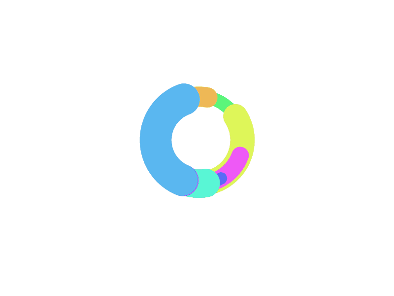

<!-- vertical layout -->
<app-vertical *ngIf="isVerticalLayoutRequested()" [breadcrumbs]="breadcrumbs"></app-vertical>


<!-- horizontal layout -->
<app-horizontal *ngIf="isHorizontalLayoutRequested()" [breadcrumbs]="breadcrumbs"></app-horizontal>
